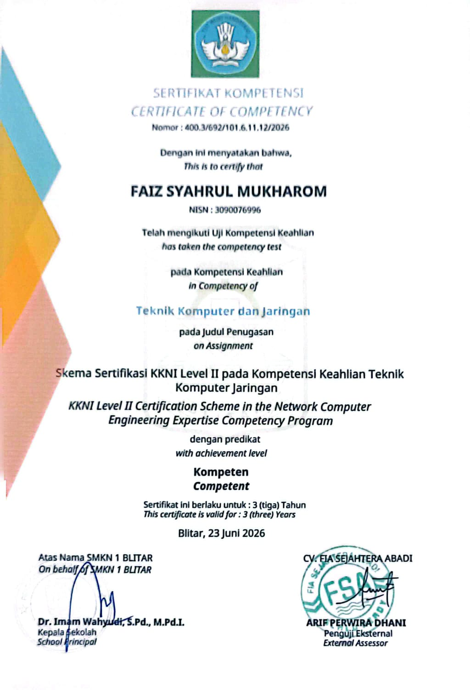

Faiz Syahrul Mukharom
Siswa Kelas XI TKJ 1
📍 SMKN 1 KOTA BLITAR
Saya adalah murid jurusan Teknik Komputer dan Jaringan (TKJ) yang antusias dalam pengembangan Front-End dan Back-End Web. Bagi saya, menulis kode yang bersih adalah cara memecahkan masalah nyata secara terstruktur dan kreatif.
Perlengkapan & Keahlian
Riwayat Pendidikan
Perjalanan pembelajaran dan pengembangan kompetensi di bidang teknologi.
SMKN 1 Kota Blitar
Kompetensi Keahlian: Teknik Komputer dan Jaringan (TKJ)
Mempelajari administrasi infrastruktur jaringan, konfigurasi router & switch (Cisco/MikroTik), administrasi sistem jaringan, serta pengembangan aplikasi berbasis web (HTML, CSS, JavaScript).
MTsN 1 Kota Blitar
Menyelesaikan pendidikan menengah pertama dengan minat pada bidang teknologi informasi dan kegiatan ekstrakurikuler sekolah.
Proyek & Eksplorasi Karya
Kumpulan sistem web, simulasi jaringan, dan purwarupa antarmuka yang telah dikembangkan.
Sertifikat Kompetensi
Klik pada gambar sertifikat untuk melihat detail ukuran penuh.

Sertifikat Uji Kompetensi Keahlian UKK
Diberikan sebagai pengakuan atas pencapaian kompetensi keahlian di bidang Teknik Komputer dan Jaringan (TKJ) setelah menyelesaikan ujian praktik dan teori.